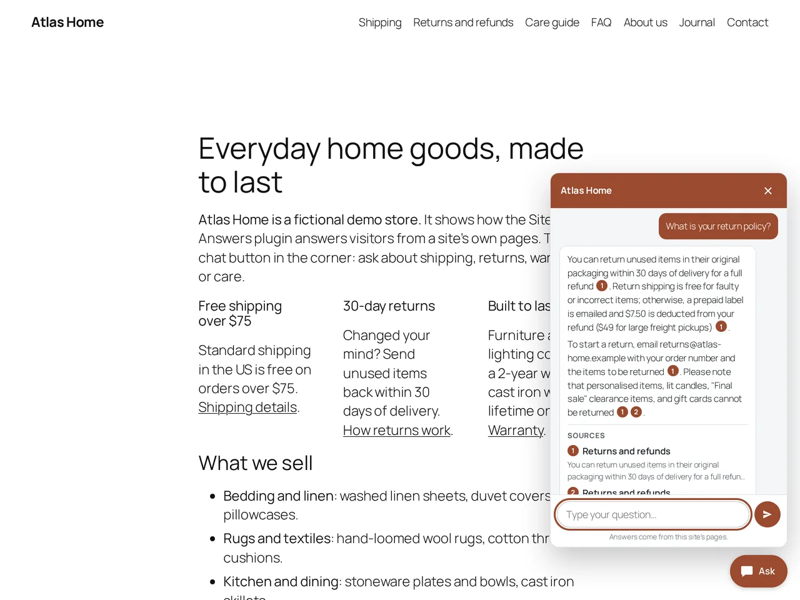
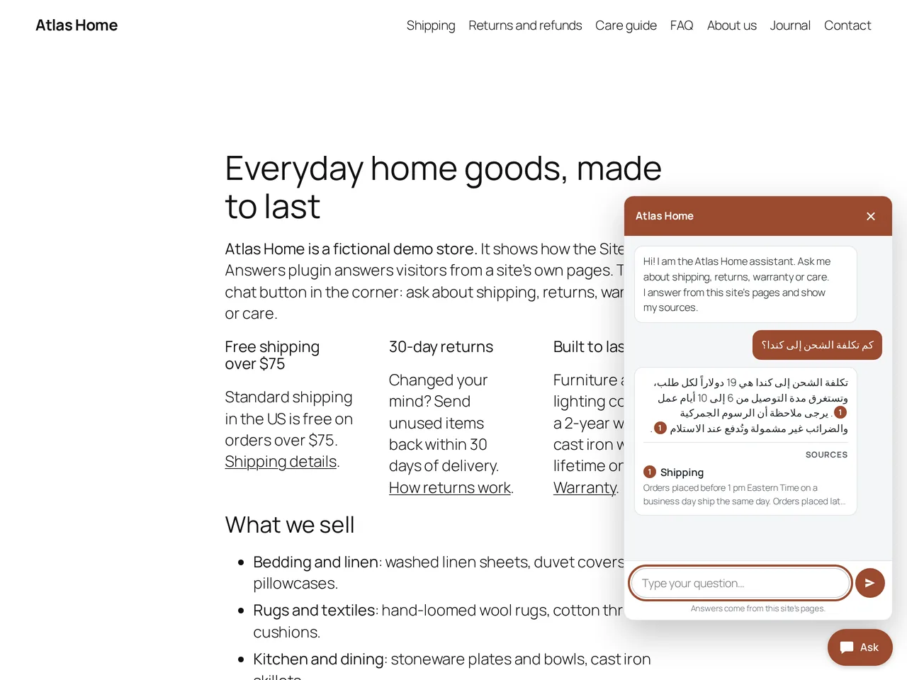
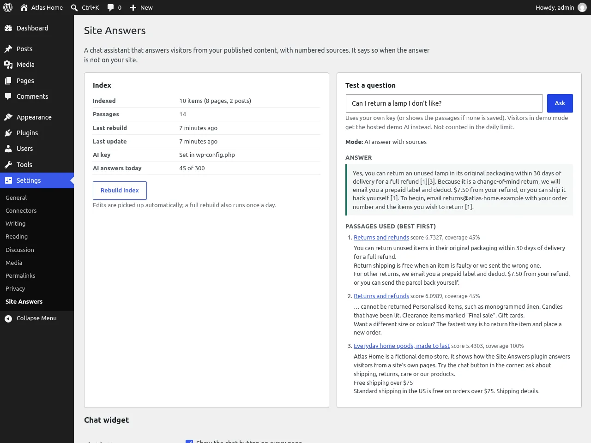

WordPress plugin: Site Answers
AI chatbot for WordPress that answers from your own pages, with sources
Visitors ask a question. The chat finds the right passages on your site and answers from them, with numbered links to the pages it used.
The button opens a real WordPress site in your browser: a fictional store called Atlas Home. The first load downloads about 30 MB: about 7 seconds on fast internet, longer on a phone. Then click Ask in the corner. You are logged in as admin there: the "Plugin settings" link on the store's home page opens Settings > Site Answers. The demo store has pages and posts only; product answers (price, SKU, stock) are covered by the WooCommerce tests.

What it does
- Answers from your pagesPages, posts and WooCommerce products: price, stock, SKU, sizes and descriptions. Every answer links the pages it used.
- Says when it doesn't knowOff-topic questions get "I couldn't find that on this site" and a link to your contact page. No guessing.
- English, French and ArabicIt replies in the visitor's language. Tested on an English site with French and Arabic questions. Arabic reads right to left.
- Runs inside WordPressWith your own AI key (OpenRouter by default). No extra server, and the key never reaches the browser.
- No question log, no cookiesIt keeps no questions and sets no cookies. For the per-visitor limit it keeps a salted IP hash for one hour. Limits per visitor and per day keep your AI bill under control.
See it


How it works
- It splits your published content into short passages and keeps them in your WordPress database. Edits are picked up automatically.
- For each question it ranks the passages and keeps only the ones that really match. Nothing relevant means no AI call.
- The AI gets those passages only, and must cite them. You see the numbered sources under the answer.
Tested on WordPress 7.1 (PHP 7.4 and 8.3) and 6.4 (PHP 7.4), with WooCommerce products (search tests), questions in English, French and Arabic, and a phone screen. Source code: github.com/slimaneoptic/site-answers. GPL license.
Limits
- You need an AI key. Each answer is a paid request to your AI service (two for a question in another language that must be translated first); most off-topic questions cost nothing.
- The online demo uses my demo AI instead, with a small daily limit. When it runs out, the chat shows the matching passages. Its Settings test box shows passages only, because the demo has no key.
- Text kept only in custom fields is not read (a developer filter can add it).
- Made for small sites: the whole index is read for each question.